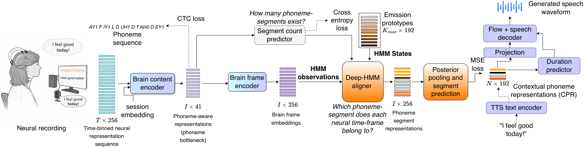

Single-Stage, Low-Latency, and Intelligible Brain-to-Speech Synthesis
Affiliation: [To be added]
Conference / submission status: [Optional — e.g. Submitted to X 2024.]
Abstract
The loss of speech limits communication for individuals with paralysis. Direct neural-to-speech synthesis is challenging due to the limited availability of neural data for training speech brain–computer interfaces. Most existing systems rely on cascaded neural-to-text-to-speech pipelines, which increase inference latency and propagate errors across stages. We present Brain2Speech-Net, a single-stage neural-to-speech generation framework without intermediate text decoding. We use a differentiable phoneme bottleneck and a deep-HMM alignment mechanism to map long neural recordings into the latent space of a pre-trained text-to-speech (TTS) model, enabling high-quality speech synthesis. On an intracortical dataset, Brain2Speech-Net achieves strong intelligibility with low latency in objective and listening tests. Unlike cascaded systems that have high latency and direct speech unit-based models that lack intelligibility, it delivers intelligible speech and real-time performance.
Model Overview

Speech Samples
Compare samples across conditions. Rows: utterances (samples 1–10); columns: Baseline 1, Baseline 2, Baseline 3, Brain2Speech-Net.
Citation
@article{brain2speech2024,
title = {Single-Stage, Low-Latency, and Intelligible Brain-to-Speech Synthesis},
author = {[To be added]},
journal = {[To be added]},
year = {2024}
}Contact & Acknowledgements
[Contact and acknowledgements text to be added.]